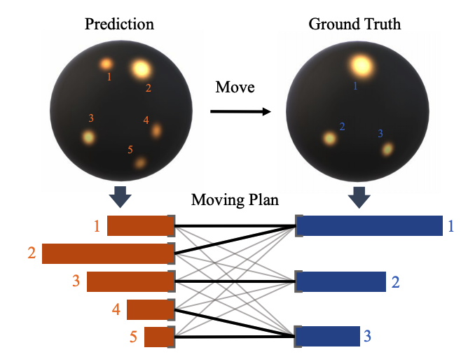

Yingchen YuPhD StudentSchool of Computer Science and Engineering (SCSE)
|
|
I am a Ph.D. student of Computer Science at Nanyang Technological University (NTU) supervised by Shijian Lu. Before that, I obtained my B.E. degree in Electrical & Electronic Engineering at NTU, and my M.S. degree in Computer Science at National University of Singapore (NUS).
My research interests include computer vision and machine learning, specifically for image synthesis.
 |
EMLight: Lighting Estimation via Spherical Distribution Approximation
Fangneng Zhan, Changgong Zhang, Yingchen Yu, Yuan Chang, Shijian Lu, Feiying Ma, Xuansong Xie AAAI Conference on Artificial Intelligence (AAAI), 2021 [ArXiv] |